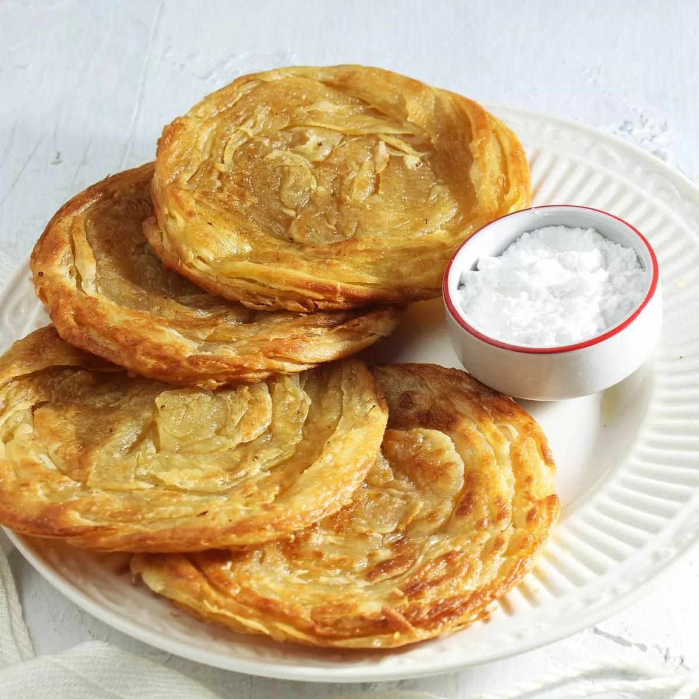

Resep Kue Maryam

Bahan-bahan :
- 250 gr tepung terigu
- 1 butir telur
- 3 sdm margarin, lelehkan
- 100 ml air hangat
- 2 sdm susu bubuk (optional)
- 1/2 sdt garam
- margarin leleh untuk olesan
- minyak untuk merendam
Langkah-langkah
- Siapkan wadah, campur air, minyak goreng dan telur, aduk hingga rata menggunakan wisk atau garpu

- Masukkan tepung terigu, susu, dan garam, uleni sampai kalis

- Bagi adonan sama rata, bentuk bulat-bulat, olesi margarin diseluruh bagian sampai rata
(boleh pakai margari cair/minyak goreng). Setelah itu tutup dengan plastik dan lap basah, diamkan selama 1 jam

- Ambil satu adonan, pipihkan hingga tipis olesi dengan margarin secara merata

- Lalu gulung perlahan sampai bentuk memanjang dan sedikit ditarik agar lebih panjang[1]. Kemudian gulung melingkar dengan arah berlawanan jadi seperti huruf 'S'[2]. ketika sudah bertemu ditengah, lalu tumpuk Jadi satu[3]

- Panaskan teflon, ambil adonan yang sudah di tumpuk jadi satu[3] kedalam teflon, langsung pipihkan dengan cara ditekan memutar menggunakan serokan penggorengan

- Jika bagian bawah sudah sedikit mengeras, balik lalu tekan memutar lagi, balik tekan kembali hingga semua sisi berwarna kuning kecoklatan,

- Apabila sudah matang semua, sajikan dengan topping sesuai selera..roti ini enak juga dimakan bersama semangkuk gulai untuk pengganti nasi🍵🍴

- Kalau membuat banyak, dan tidak langsung habis, bisa disimpan di dalam frezeer, dapat bertahan kurleb 1mingguan+. Jika mau disajikan kembali tinggal di panasin pakai teflon dan tidak perlu pakai minyak.